Welcome, this talk is about Cockpit.
Going to show you how it works, and what makes it special.
I imagine some of you have heard about Cockpit before
But in case you haven't I'll do a quick overview.
Cockpit is aLinux admin interface
Cockpit is aremote interactive
Cockpit is a *remote interactive* admin interface
Cockpit runs in a browser and is accessible remotely. Most
server and systems are headless. It's interactive, you perform
admin tastks interactively, troubleshoot, configure and so on.
Goals:
1. Linux usable 2. Complex Linux featuresdiscoverable
2. Complex Linux featuresdiscoverable
Now I could show you Cockpit all day ... there's so many cool
features configuring storage, starting services, docker containers,
looking through logs But what I'm really excited is about how
Cockpit works And it's in the title of the talk ... cockpit is a
Linux session
Now Linux session is a bit of a vague term ... but I'm talking
about this in the sense of an X11 login session or an SSH login
session.
Cockpit is a login session that runs in your browser.
Most of Cockpit is written in javascript, and that javascript
code is running in a logged in linux session, both from a security
perspective, from XXXXX
APIs
SLIDE:
A linux system, especially modern Linux has many APIs for
configuring aspects of the system.
Some of the APIs are obvious, DBus apis or REST apis. systemd is
a good example It has a DBus API for doing all sorts of stuff. The
hostname changes previously was implemented by calling the system
hostnamed API.
Other APIs aren't so obvious, accessing them may involve spawning
a process, or reading a file such as the ones in /proc
Here's an example of the hostnamed call we made earlier. I'm
typing javascript code directly in the interactive console on my
browser here. If you have Cockpit running on your system try this.
It's trivial to interact with the APIs, easier even than if you
were on the system itself ... but that's the point ... we are on
the system ... logged into the system ... and the javascript code
here is running as part of the login session.
This is what got me excited about Cockpit. Now when I started
hacking on it it couldn't do all of this stuff ... but the very idea
that there was code in the browser interacting directly with the system
cutting through the usual layers of crap ... and really makes building
admin tools fun again.
Let me show you another example. Spawning a process. Here's a single
line of code that spaws a process in the Cockpit session. I'm spawning
ping.
Do you notice how the output streams back ... and we can react to
it in real time.
SLIDE: ????
Now I could show you more and more about this, reading files,
monitoring them connecting to sockets, doing REST requests ...
but lets move on.
Architecture
So how does all this work?
SLIDE:
Bridge
IMAGE: Updated
Well if you're logged into Cockpit and look closely ... you'll
notice there's a process called cockpit-bridge
cockpit-bridge doesn't know anything about configuring a system
it knows how to process messages. The bridge receives messages
on its standard in ... and produces messages on its stdout. A
message might be about invoking a dbus method, or spawing a process
or reading a file
and it produces messages with the results asynchronously ... The
javascript code running in the browser reacts to those messages
and can carry out the actions it needs to.
Web Service
IMAGE: Updated
Now obviously the browser cannot talk directly with the bridge
on standard in and standard out.
Enter the WebSocket ... The cockpit-ws process makes a WebSocket
available for the browser to talk to ... and any messages passed
over the WebSocket are passed to the bridge and vice versa.
HTTP
IMAGE: Updated
One last piece ... how does the javascript code that comprises
Cockpit get to the browser? Well iva HTTP, cockpit-ws has a small
web server that loads Cockpit into the browser once you're logged in.
Authentication and Identity
SLIDE:
Now you may be wondering about security ... this all sounds pretty
wild ... browsers authenticating with the system.
Lets start with authentication
A key component of a login session is its identity ... who are you
logged in as When you log in via ssh ... sshd authenticates you in
the sshd process and then starts the shell with a specific uid and gid
When your browser first connects to Cockpit it won't just let you
open the WebSocket launch the bridge and start passing messages to
access the system APIs ... it requires that you log in first.
The user name and password that you type here is passed into the
PAM stack, which checks auth ... then access ... whether you're allowed
to log in ... creates a pam session, including SELinux session, logind
session ... and then launches the bridge inside that cockpit-bridge
Here's the terminal we have inside of Cockpit. You can see what the
session looks like and that we're logged in as a specific user.
So that's why I can stand here and say "the javascript code is part of
the login session" Everything the code does to the system goes through
the bridge ... and the bridge can only perform those operations as the
logged in user. So the javascript code really is running *AS* the logged
in user.
When Cockpit needs to do something with evelevated privileges ... it
uses sudo or polkit depending on the scenario ... and that only succeeds
if the system allowed you to perform that operation.xxxxxxx
Content-Security-Policy
Now if you're running javascript *AS* the logged in user ... you want
to be damn sure that only the code that was intended to run gets run
... and that nobody can sneak code in via MITM or XSS or request forgeries
Nowadays browsers have this thing called Content Security Policy
... which if you're not familiar with it is sorta like SELinux for
browser content.
IMAGE:
You can tell the browser to refuse to execute code from any other
source than the server. If you have an onclick attribute or eval of
some string ... or an inline script tag it's just not going to run.
So we can really underscore the concept that the code is running as
the user and only the users code is running.
Plugabbility
One of teh things you typically expect of a login session is the
ability to run different tools or applications. A login session is not
a kiosk. On your desktop you can run various applications, and usually
install and remove them ... and when you login via SSH it's a similar
story you can add or even build tools to run.
Cockpit is componentized and pluggable the same way. Each section you
see here is really running as a separate browser based application ...
loosely coupled. They often come in different subpackages (RPMs) and
are installable and removable.
VIDEO: pluggable
In fact it's easy to build your own bits of UI that interact with
your custom admin scripts or other tooling. Here's the full text of
such a tool, and here is it running.
And as you seen before Cockpit can host terminal based applications
You can even do some pretty wild things like running GTK apps. This
is broadway, and these apps are really running in the browser. GTK
supports HTML5 based rendering, and Cockpit provides the login
session and authentication to wrap it all together. This is just an
example, but I hope it proves my point.
Each of those components are also embeddable in other web based
applications. Here's an example.
One of the cooler things about Cockpit is that it can connect out
to other servers via SSH ... even if those servers are not accessible
to the browser. They may be behind a firewall and you may have a
bastion host ... or simply don't want to open up the additional
TCP port to allow the browser to connect to Cockpit.
Cockpit connects out to those servers via ssh, using password,
based auth and others
IMAGE: full architecture
The same cockpit-bridge is launched as it was earlier ... but in
this case it's launched over SSH, which starts the session as the
appropriate user, and we talk to the bridge over standard in and
standard out as before.
Declarative vs. Interactive
SLIDE: text
Now obviously you don't want to do this with thousands of servers.
And that's where I want to highlight the difference between declarative
and interactive configuration.
With declarative configuration you define the state you want, and
then say "Mkae it so" or "make 10 of these" and the management system
executes your wishes. That's what you want with thousands of servers.
Interactive is a different use case, where you troubleshoot
interactively, maybe do some configuration interactively and so on.
Sometimes the use cases overlap, where you might want to interactively
troubleshoot a server that Puppet or Satetelite has deployed in a
declarative manner.
How to join ... contribute
SLIDE: text
Code
Mention cockpit distro talk
Mention maintainers, testing
cockpit-project.org #cockpit on Freenode
stef.thewalter.net
github.com/cockpit-project/cockpit
Red Hat, Inc